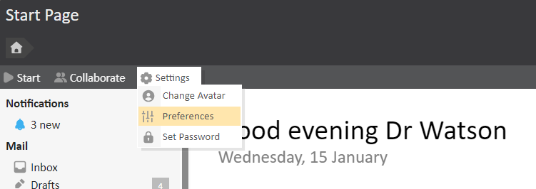
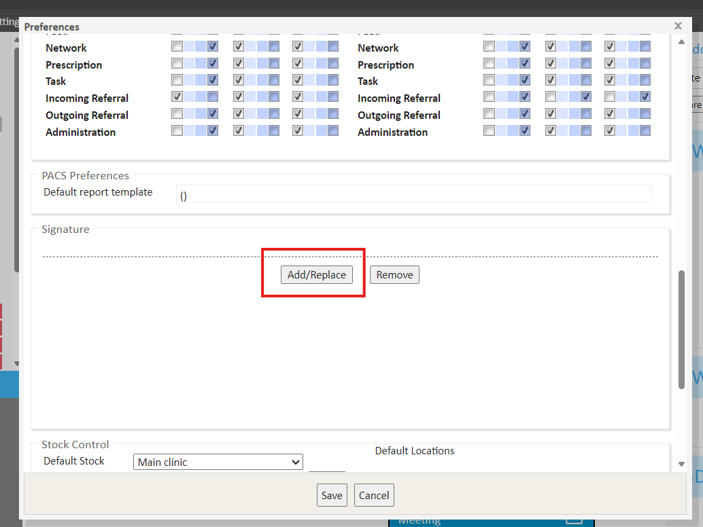
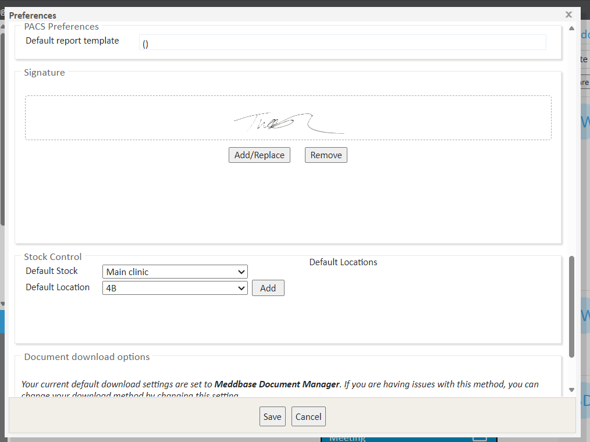

Meddbase offers the ability to upload an image of the signature of user who is logged in to the system. This will allow for this to be pulled through onto documents and prescriptions should this be required.
The purpose of this article is to explain how to upload a signature to a user profile and the relevant template codes to use within a template.
This is set up using the preferences for each user which can be accessed from the Start Page > Settings > Preferences.

Once this option has been selected the window will pop up, and the Signature section must be located towards the bottom of this window.

Selecting Upload will allow for the signature to be attached to the user profile. This must be in the format of: jpg, jpeg, png, or bmp. Browse your device for the image of the signature, once this has been located this can be uploaded by selecting ‘upload’. Ok will automatically be selected once Upload has been pressed.
Once the signature has been uploaded the preference screen with the image displayed.

Should this need to be altered a new image can be added using the same process as above if upload is selected or remove can be selected if this is no longer required.
This signature can then be pulled through onto various templates using the codes listed below:
| Template Code | Description |
| {Profile.Account.Signature} | Signature of the user generating the document from a template. |
| {Doctor.Signature} | Signature of the doctor. |
| {Appointment.Doctor.Signature} | Signature of the doctor if the template is being generated from within an appointment. |
| {IssuerProfile.Account.Signature} | Signature of person issuing the prescription if the template is a prescription. |